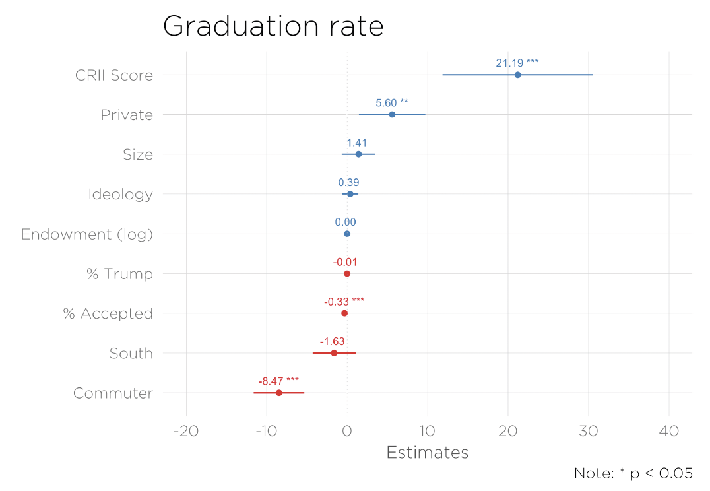
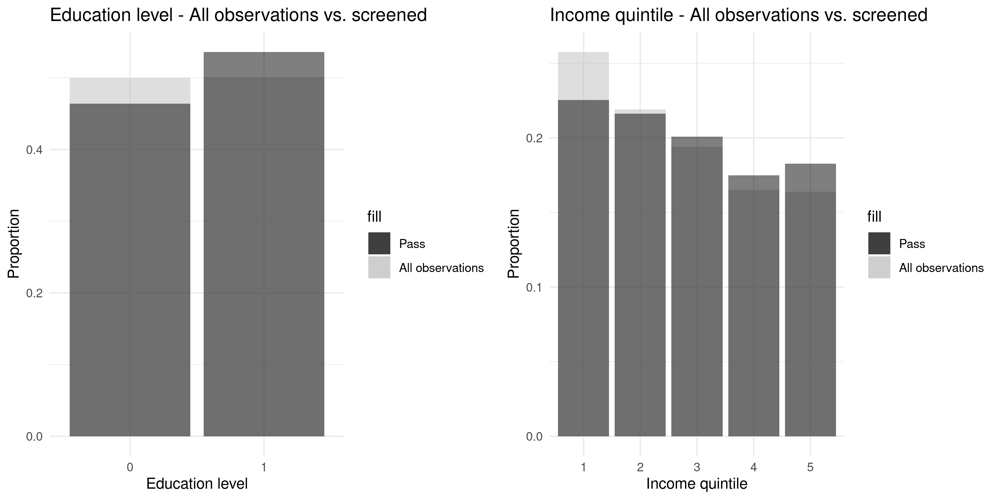

Working Papers & Projects
Our working papers and projects cover four broad research areas. We list below some of the papers and projects we're working on related to these areas. If you're interested in collaborating on these topics, please get in touch with us!
* = student author when the project started

